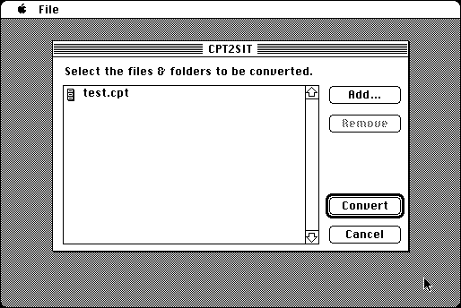

Download
cpt2sit_converter.zip (90K) CPT2SIT 3.0.6 repackaged into a zipped hfs disk image and checksum file. The disk image can be mounted with Mini vMac.
cpt2sit_converter.bin (102K) CPT2SIT 3.0.6 in the original format.
copyright: Aladdin Systems
mod date: Jun 17, 1993
license: free for non-commercial use
last known url
(gone)
Converts “Compact Pro archives to Stuffit archives”. “Requires System 6.0.4 or later”. By Leonard Rosenthol.

If you find these downloads useful, please consider helping the Gryphel Project, which hosts them.
Here are the md5 checksums for the downloads, signed with Gryphel Key 5:
--------- GRY SIGNED TEXT --------- 370390a785e6047f21f425fb4f4db6e0 cpt2sit_converter.zip 063f44d2c172c74b6921efd1f0de67dd cpt2sit_converter.bin ------- BEGIN GRY SIGNATURE ------- Gry/4Xa8CFcUzxdN/AyQIyBIManwKDr98pWATBxkMuPu0XiCS2zd86+077d3XNtn E2GDIdIgdoRGwXtOvtd898arHKJAiZUvEJN/bO7Xu2Ldk379PzPyimXTZj0IyRo5 /1CJU9nh//SDLmd1SwyZ42yBzr3F+Yt372ReZ9W3S94/wMzXcEDH9SSzoRSDNEIf -------- END GRY SIGNATURE --------